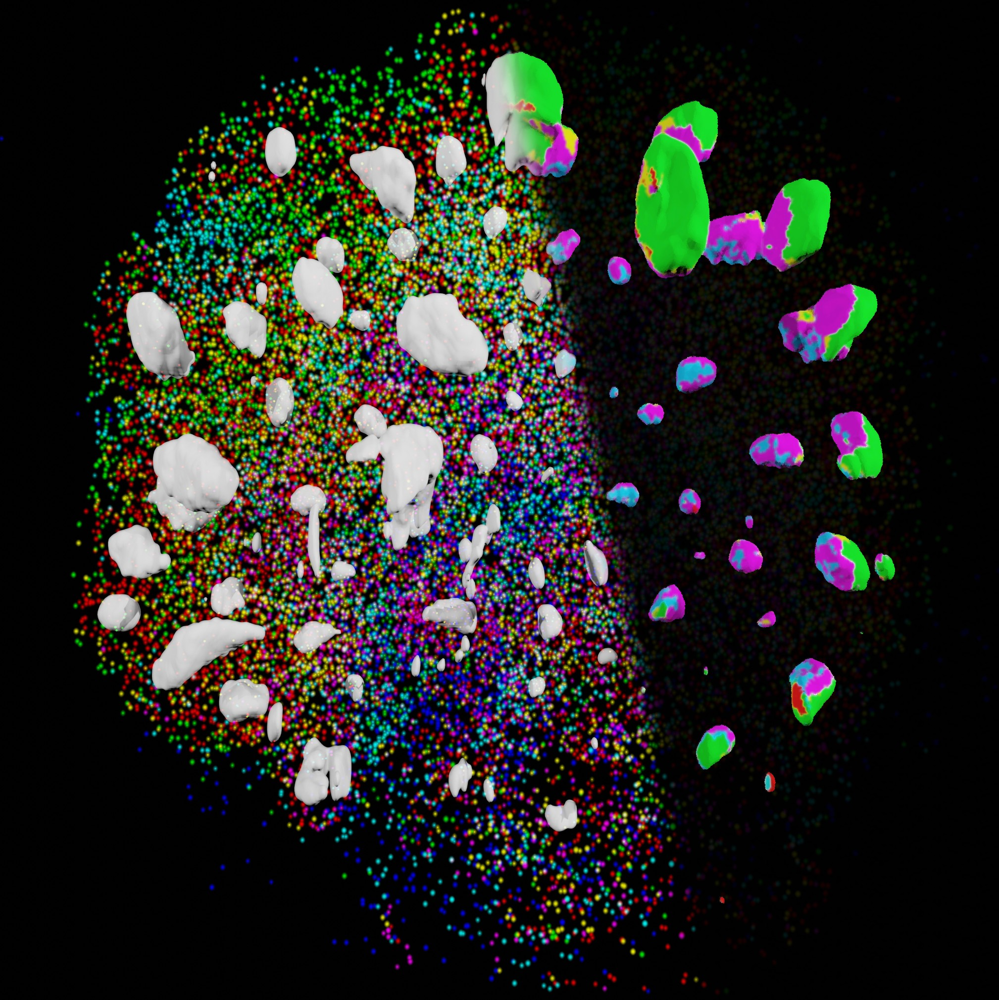

Welcome to SCOUT’s documentation!¶
{kind=link}
SCOUT is an open-source Python package for performing volumetric image analysis of intact cerebral organoids. [1] The details behind the development of this package can be found in the following publication:
| [1] | Alex Albanese*, Justin Swaney*, Dae Hee Yun, Nicholas Evans, Jenna Antonucci-Johnson, Vincent Pham, Chloe Delepine, Mriganka Sur, Lee Gehrke, Kwanghun Chung. 3D Imaging and High Content Morphological Analysis of Intact Human Cerebral Organoids. Nature Methds (under revision), 2020. |
If you use SCOUT, please be sure to cite this publication in your work.
The SCOUT package provides a command-line interface (CLI) for extracting multiscale features as well as a library of tools that can be mixed-and-matched to build custom single-cell organoid analyses pipelines. SCOUT also includes example Jupyter notebooks for users that prefer the more interactive, web-based development environment.
Tutorial
Main Modules
Additional Modules
Cheatsheet Modules
Contributing¶
For those who want to add additional functionality to the existing SCOUT pipeline, a pull request can be submitted to the SCOUT repo. Feature requests can be submitted as issues on the SCOUT repo as well.
Contact¶
If you have questions about SCOUT or how to use it, please submit an issue to the SCOUT Github repo. We welcome feedback from the organoid scientific community.